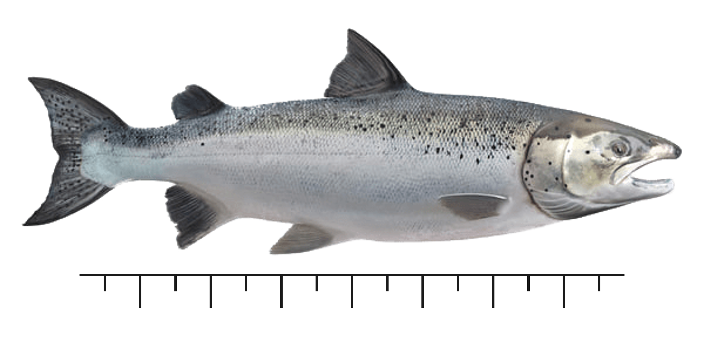
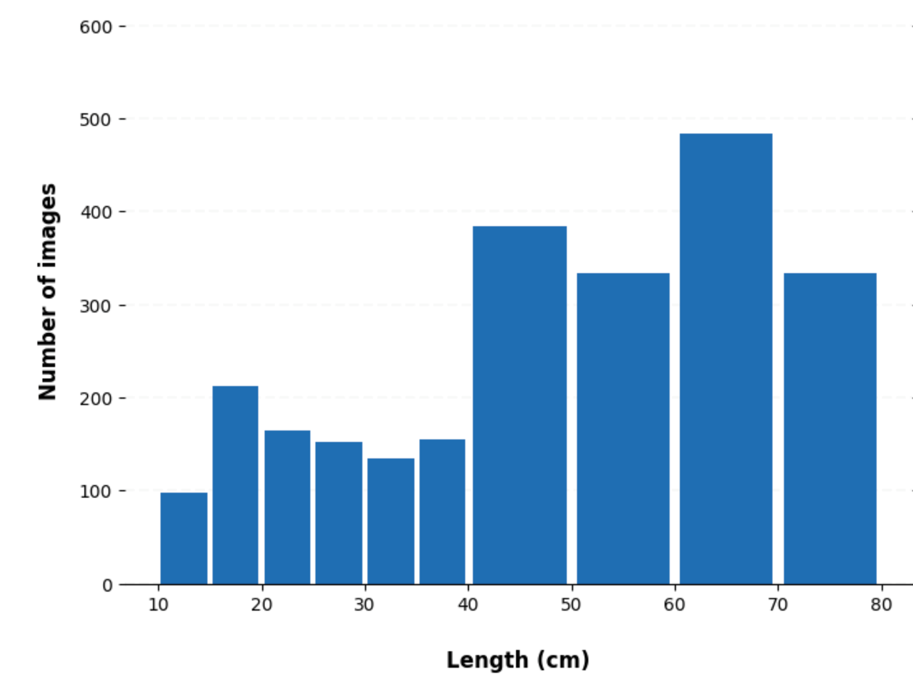
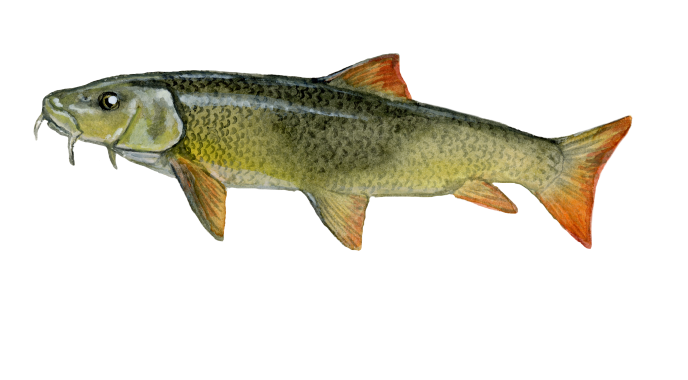

CHANGE TO LT: Estimating fish size classes using image classification and machine learning models
Įvadas
Čia pristatome vartotojui draugišką ir lengvai pritaikomą dirbtinio intelekto (DI) sistemą, padedančia įvertinti žuvų dydžio klases iš nuotraukų kurti, kuriose žuvis rankose laiko žmonės. Socialinėse platformose, piliečių moklso programose ir išmaniųjų telefonų programėlių dėka pasaulyje yra surinkta milijonai nuotraukų, kuriose žvejai rankose laiko pagautas žuvis. Dauguma atveju tokiose nuotruakose nėra informacijos apie žuvies dydį, o tai reiškia kad jų panaudojimas žuvų būklės įvertinime yra labai ribotas. Siekdami pagerinti duomenų rinkimą apie gėlavandenes ir jūros pakrantės žuvis ir jų populiacijų būklę, mes pritaikėme šį dirbtinio intelekto modelį, kuris klasifikuoja žuvis į nustatyto dyždio (5-10 cm) klases. Šis modelis ir jo naudojimas yra panašus į DI paremtą žuvų rūšių atpažinimo modelį, bet yra pritaikytas žuvų dydžio klasėms.
Šio modelio apmokymui nuotraukos buvo surinktos Gamtos tyrimų centro ir Kadanos žvejų piliečių moklso programėlės **My Catch, Angler’s Atlas bendradarbiavimo dėka. MyCatch programėlės vartotojai dalinosi nuotraukomis surinktomis įvairių žvejybos konkursų metu. Nuotraukos taip pat buvo surinktos iš šiame projekte sukurtos FishSizeProject programėlės.
Jei norite daugiau sužinoti apie mašininio mokymosi modelių kūrimą ir mūsų pristatomą sistemą, kviečiame išklausyti mūsų surengtus nuotolinius mokymus.

Modelio kodas
Norint pritaikyti šį modelį jūsų surinktoms nuotraukos, labai svarbu, kad žuvų dydžių klasės jūsų duomenų rinkinyje būtų teisingai nustatytos, nes kitaip jūsų modelis bus netikslus. Nuotraukas (JPEG arba PNG formatu) galite įkelti į “Google” diską pagal dydžių klases (t. y. po vieną dydžio klasę viename aplanke), laikydamiesi šios katalogų struktūros:
dataset
|__ class5
|______ image1.PNG
|______ image2.PNG
|______ ...
|__ class10
|______ image3.JPG
|______ image4.PNG
|______ ...
|__ class15
|______ image5.PNG
|______ image.JPG
|______ ...
|__ ...
Nuotraukų pavadinimas nėra svarbus. Svarbu tik kad katalogų pavadinimai atitiktų jūsų norimas dydžio klases.
Norėdami taikyti mūsų modelį, galite naudoti šį kodą:


Modelio taikymas
Jei norite daugiau sužinoti apie modelio vystymą ir pritaikymą galite peržiūrėti šį pranešimą nuotoliniame seminare “Mašinų mokymasis, žvejyba ir piliečių mokslas” arba šį pranetimą nuotoliniame seminare “Ar piliečių mokslo, išmaniųjų telefonų ir socialinės medijos duomenys gali būti naudojami mėgėjiškos žvejybos valdyme?”.
Šioje ublikacijoje mes detaliai aprašome pristatomą modelį ir jo pritaikymą pradiniams duomenis.
Artimiausioje ateityje mes šį modelį toliau tobulinsime. Tam pirmiausia sieksime surinkti daugiau nuotraukų, pasiekti didesnį modelio tikslumą, ir tuomet pritaikyti šį modelį populiarios žuvies rūšies (pvz. lydekos) tyrimams naudojant socialinių tinklų nuotraukas. Taigi, laukite daugiau rezultatų.
